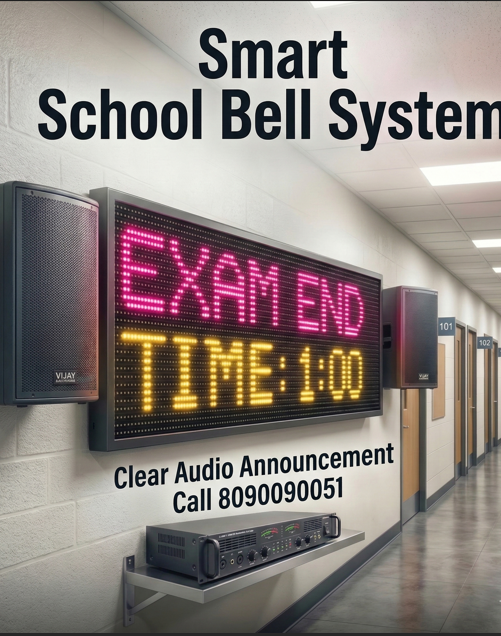
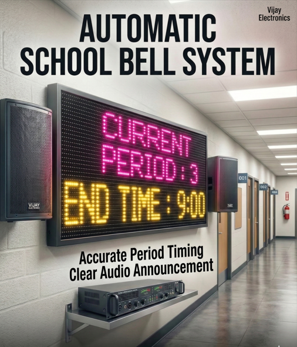
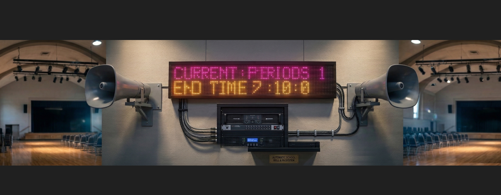

स्कूलों और कॉलेजों के लिए Complete Guide. आज भारत में हजारों स्कूल हमारे Smart School Bell System का उपयोग कर रहे हैं। समय की बचत और बेहतरीन अनुशासन के लिए सबसे भरोसेमंद मशीन।

Automatic School Bell Timer System – Schools और Colleges के लिए Complete Guide
स्कूलों और कॉलेजों में समय का सही प्रबंधन बहुत जरूरी होता है। हर क्लास, पीरियड और ब्रेक समय पर होना चाहिए। इसी समस्या का समाधान है Automatic School Bell Timer System।
यह एक डिजिटल डिवाइस है जो स्कूल के पूरे टाइम टेबल के अनुसार अपने आप घंटी बजाता है。
आज भारत में हजारों स्कूल Smart School Bell System का उपयोग कर रहे हैं।
School Bell Timer System क्या है?
School Bell Timer System एक electronic automation device है जो समय के अनुसार bell trigger करता है।
इसमें एक digital timer होता है जिसमें पूरा timetable सेट किया जाता है।
जब समय आता है, यह सिस्टम automatically bell activate कर देता है।
Automatic Bell System के फायदे
1. पूरी तरह automatic
इस सिस्टम में किसी व्यक्ति को bell बजाने की जरूरत नहीं होती।
2. समय की बचत
स्कूल स्टाफ का समय बचता है।
3. बेहतर discipline
सभी क्लासेस समय पर शुरू और समाप्त होती हैं।
4. आसान संचालन
एक बार timetable सेट करने के बाद यह सिस्टम कई दिनों तक काम करता रहता है।
Smart School Bell System के Components
एक complete school bell system में आमतौर पर ये components होते हैं।

यह पूरे सिस्टम का मुख्य भाग होता है।

यह bell sound को speakers तक भेजता है और पूरे स्कूल में आवाज पहुंचाने के लिए।
Smart Bell System कैसे चुनें?
अगर आप अपने स्कूल के लिए bell system खरीदना चाहते हैं तो इन बातों का ध्यान रखें।
Sound Quality
स्पीकर की आवाज पूरे स्कूल में साफ सुनाई देनी चाहिए।
Timer Accuracy
Timer बिल्कुल सही समय पर काम करे।
Programming Option
Timetable आसानी से सेट किया जा सके。
Backup
Power cut होने पर भी system काम करे।
Digital Bell Timer System के Features
आजकल के smart systems में कई advanced features मिलते हैं।
Automatic bell ringing
Weekly schedule setting
Multiple bell tones
Digital display
Easy programming
कुछ systems में MP3 voice announcement भी होता है।
School Automation Technology
आज कई स्कूल School Automation Systems का उपयोग कर रहे हैं।
इनमें शामिल हैं:
Smart Bell System
Digital Attendance
Smart Classrooms
CCTV Security
Public Announcement System
इन तकनीकों से स्कूल पूरी तरह modern education environment बन जाते हैं।
Automatic Bell Timer कहाँ से खरीदें?
भारत में कई कंपनियाँ school bell systems बनाती हैं।
लेकिन सबसे जरूरी है:
Quality product
Proper installation
After service support
Vijay Electronics Unnao – Smart School Bell Solution
अगर आप अपने स्कूल या कॉलेज में Automatic School Bell Timer System लगवाना चाहते हैं तो Vijay Electronics Unnao आपकी मदद कर सकता है।
यहाँ उपलब्ध सेवाएँ:
Smart School Bell Installation
Digital Bell Timer Programming
Speaker System Setup
School Automation Solutions
📍 Vijay Electronics Unnao
📞 Contact: 8090090051
निष्कर्ष
Automatic School Bell Timer System स्कूलों और कॉलेजों के लिए एक जरूरी तकनीक बन चुका है। यह समय प्रबंधन को बेहतर बनाता है और स्कूल को अधिक आधुनिक बनाता है।
अगर आप अपने संस्थान में Smart School Bell System लगाना चाहते हैं तो यह एक स्मार्ट और उपयोगी निवेश है।